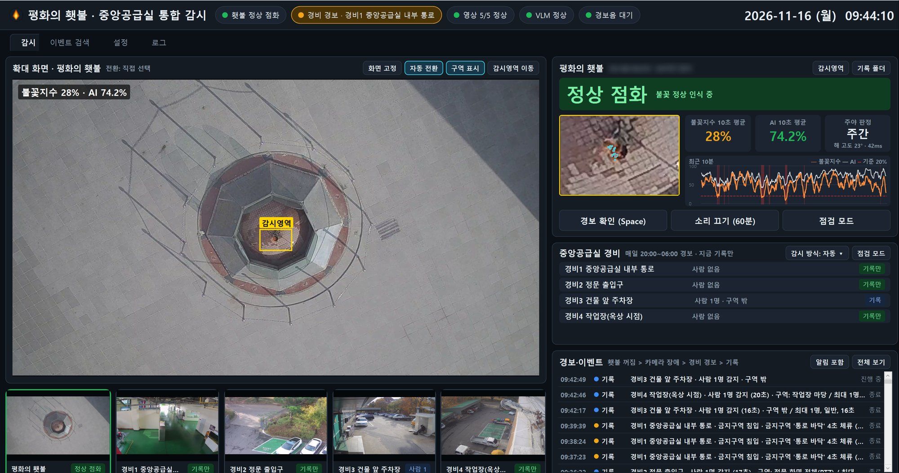

안전 · 보안
평화의 광장 감시 프로그램 구축
평화의 광장 횃불을 CCTV로 24시간 감시하며, 불꽃이 정상적으로 점화되어 있는지 AI가 자동 판정하는 감시 시스템을 구축했습니다. 불꽃이 꺼지거나 카메라 장애가 발생하면 즉시 경보를 울려 담당자가 신속히 대응할 수 있습니다.


- 불꽃지수와 AI의 이중 판정
- 영상의 색과 밝기로 계산한 불꽃지수(10초 평균)와 비전 AI 판정(10초 평균)을 함께 결합해 정상 점화 여부를 판정합니다. 최근 10분간의 추이 그래프를 통해 상태 변화를 한눈에 확인합니다.
- 감시영역 지정
- CCTV 화면에서 횃불 불꽃 영역만 감시영역(ROI)으로 지정하고 필요 시 이동할 수 있어, 주변 행인 움직임이나 그림자에 의한 오탐을 최소화했습니다.
- 해 고도 계산 기반 주간·야간 자동 판정
- 태양 고도를 실시간으로 계산해 주간과 야간을 자동 구분하고, 일출·일몰 및 주변 조도 변화에 맞춰 판정 기준을 보정합니다.
- 꺼짐 경보와 점검 모드
- 불꽃이 꺼지거나 영상 수신 장애가 생기면 즉시 경보를 발생시킵니다. 설비 점검 중에는 점검 모드로 전환하고 알림 끄기 기능을 제공해 불필요한 오경보를 방지합니다.